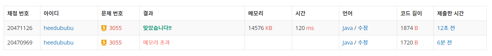

👀 문제
https://www.acmicpc.net/problem/3055
👊 도전
1. 설계
- S에서 D까지의 최단 거리를 구해야하므로 BFS를 사용한다.
- 고슴도치가 이동하는 큐 하나, 물의 범람을 체크하는 큐 하나를 각각 둔다.
- 1초마다 물 범람을 체크하고, 현재 큐에 있는 노드들로 방문 가능한 곳들을 체크한다.
- D에 도착하면 현재 시간을 리턴한다.
2. 구현 (성공 코드)
1
2
3
4
5
6
7
8
9
10
11
12
13
14
15
16
17
18
19
20
21
22
23
24
25
26
27
28
29
30
31
32
33
34
35
36
37
38
39
40
41
42
43
44
45
46
47
48
49
50
51
52
53
54
55
56
57
58
59
60
61
62
63
64
65
66
67
68
69
70
71
72
73
74
75
76
77
78
79
80
81
82
83
84
85
86
87
88
89
90
91
92
93
94
95
96
import java.util.LinkedList;
import java.util.Queue;
import java.util.Scanner;
/**
* @author HEESOO
*
*/
public class Main {
static int r, c;
static Character[][] map;
static boolean[][] visit;
static Queue<Dot> water, q;
static int[] dotX= {0,0,-1,1};
static int[] dotY= {1,-1,0,0};
public static int bfs() {
int qSize=0;
int time=0;
while(true) {
if(qSize==0) { // 1초안에 체크해야할 노드 방문 완료했으므로 새 노드들로 갱신 필요
qSize=q.size();
checkWater(); // 범람 체크
time++; // 시간 1초 지났으므로
}
qSize--;
if(qSize==-1) {// 방문해야할 큐가 없다면
return -1;
}
Dot d=q.poll();
for(int i=0;i<4;i++) {
int xx=d.x+dotX[i];
int yy=d.y+dotY[i];
if(0>xx||xx>=r || 0>yy||yy>=c) continue;
if(visit[xx][yy]) continue;
if(map[xx][yy]=='D') return time;
if(map[xx][yy]=='.') {
visit[xx][yy]=true;
q.offer(new Dot(xx, yy));
}
}
}
}
public static void checkWater() {
int waterSize=water.size();
while(waterSize>0) { // 현재 시간에 물이 있는 칸들을 체크
waterSize--;
Dot w=water.poll();
for(int i=0;i<4;i++) {
int xx=w.x+dotX[i];
int yy=w.y+dotY[i];
if(0>xx||xx>=r || 0>yy||yy>=c) continue;
if(map[xx][yy]=='.') { // 빈 곳은 범람시키기
map[xx][yy]='*';
water.offer(new Dot(xx, yy));
}
}
}
}
public static void main(String[] args) {
// TODO Auto-generated method stub
Scanner scan=new Scanner(System.in);
r=scan.nextInt();
c=scan.nextInt();
map=new Character[r][c];
visit=new boolean[r][c];
water=new LinkedList<>();
q=new LinkedList<>();
for(int i=0;i<r;i++) {
String str=scan.next();
for(int j=0;j<c;j++) {
map[i][j]=str.charAt(j);
if(map[i][j]=='S') { // 시작점 체크
q.offer(new Dot(i, j));
visit[i][j]=true;
}
else if(map[i][j]=='*') // 물이 있는 곳 체크
water.offer(new Dot(i, j));
}
}
int answer=bfs();
if(answer==-1)
System.out.println("KAKTUS");
else System.out.println(answer);
}
}
class Dot{
int x;
int y;
public Dot(int x, int y) {
this.x=x;
this.y=y;
}
}
3. 결과
 🤟 성공 🤟
4. 설명
- BFS를 이용한다
- S에서 D까지의 최단경로(최소 시간)을 구해야 하므로 BFS를 이용한다.
- 이때 체크해야할 것이 고슴도치의 위치(q)와 물의 범람(water)이므로 두 개의 큐가 필요하다.
- 1초마다 물의 상태와 고슴도치가 방문할 수 있는 노드들을 계산한다
- 현재 시간이 t일 때의 큐 사이즈를 qSize에 저장한 후, 모든 노드들의 방문이 끝나면 1초가 지났다고 인식한다. qSize를 저장해둬야 하는 이유는, 중간에 계속 큐에 값이 삽입되므로 큐 사이즈가 갱신되기 때문이다.
- qSize==0이라면 t초 동안 방문해야할 곳들의 체크가 끝난 것이므로, 다시 qSize값을 받아와 방문해야할 노드들의 개수를 저장하고, 시간이 지났음을 나타내기 위해 time++한다. 마찬가지로 시간이 1초 지났으므로 checkWater()로 물의 범람도 체크해야한다.
- qSize==-1은 qSize에 새 값을 갱신하였으나 0이 들어오고, qSize–로 -1이 된 경우이다. 이 뜻은 큐에 더 이상 방문해야할 노드가 없다는 뜻이고, 결국 마지막 노드를 방문할 때 까지 D를 찾지 못했으므로 -1을 리턴하여 main에서 ‘KAKTUS’를 출력하게 한다.
- checkWater()은 t초일 때 물이 찰 수 있는 곳을 체크하는 것이다. water에 현재 물이 들어있는 노드들을 저장해두었으므로 그 곳에서 상하좌우로 빈 곳에 물을 채운다.
👏 해결 완료!
참고
- 백준 3055번 탈출 :: 마이구미 https://mygumi.tistory.com/232